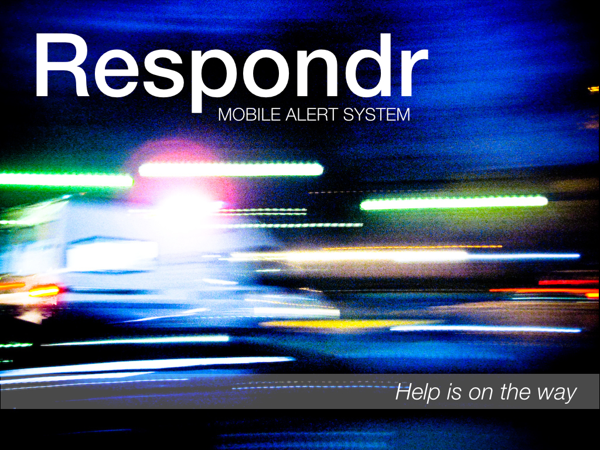
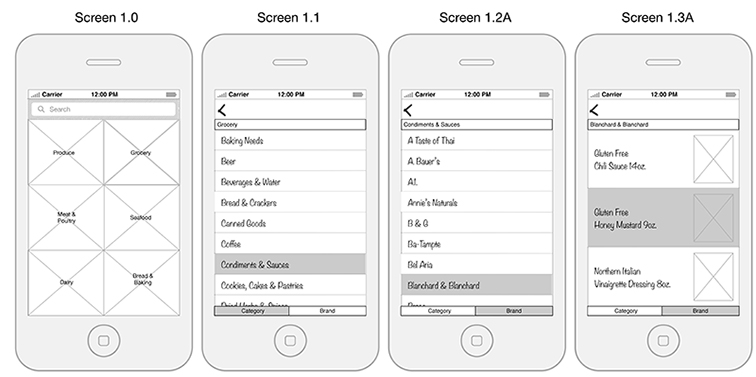
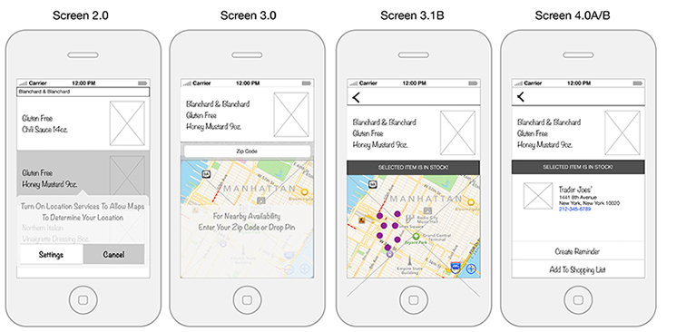

An experiment in p5.js and Arduino, the coloration of this kaleidoscopic video filter (top) can be controlled with a glove (left). This was my final project for 'Creative Computing' at ITP/NYU, summer 2016. Code Notes Here
StuffXChange also began as a class project, in Spring 2015. The first iteration (at right) is built in Angular 1 and uses Firebase and Filestack database services. As an exercise in constructing M.E.A.N. stack apps, I subsequently rebuilt much of this project. In addition to a more robust onboarding process for new groups, the revised version will have access to the mobile phone camera. My concept was to invent a service for trading stuff privately, among friends and/or relatives.
This fishing app originated in the 'Mashups' course at NYU/ITP, summer 2015. The original version was deployed to Heroku and is available here. I've substantially revised the app (right). Though not deployed, this video represents its current, revised form.

Click to open and to page through this proposal for a mobile app. Summer 2014


Wireframe for a mobile grocery-shopping application. Summer 2014